EMDK Profiles Overview
The EMDK for Xamarin allows you to easily access various capabilities of your Android device from within an Android application. These capabilities are grouped together into, what is referred to as EMDK profiles. Each EMDK profile is broken into various features. Each profile feature has parameters to provide automatic enablement as well as configuration options that will control it's behavior. One such profile feature is Data Capture, which allows you to accesses the devices bar code scanner and magstripe reader.
EMDK Profile Features
Data Capture
EMDK Data Capture profiles allow you to access and configure a devices bar code scanner and magstripe reader, along with how the data captured should be transmitted to your application. There are typically three components that are used to make this work:
- Activity Selector - Automatically activates the profile based on application & activity combinations.
- Input Sources - Choose if Barcode & MSR is the source of the data.
- Output Sources - Output the input source data as a Keystroke, Intent or IP output.
Access Manager
The Access Manager profile feature allows you to configure a set of applications that will be allowed to run on the device. When a profile with this feature is enabled, the device will only allow applications on the WhileList to be executed.
Analytics Manager
The Analytics Manager profile feature allows you to configure what data about a device should be collected, and where the collected data should be stored.
App Manager
The App Manager profile feature allows you to install, upgrade, remove, enable, disable applications from the device. It also allows you to change the current application launcher, clear recent app list and much more.
Audio Manager
The Audio Manager profile feature allows you to manage enhanced audio volume control configurations like Mute/Vibrate State and Current Active Profile.
Battery Manager
Zebra's Device batteries store information in their internal memory, for instance, the number of charge cycles a battery has accumulated. The Battery Manager profile feature allows the developer to modify that Decommission Threshold from its factory setting.
Browser Manager
The Browser Manager profile feature allows you to control the web browser on the device. For example you can set the browser homepage.
Camera Manager
The Camera Manager profile feature allows you to control access to the cameras in a device. For example you can disable the user from using all cameras on the device.
Cellular Manager
The Cellular Manager profile feature allows you to configure options of the cellular radio on your device. For example you can turn off data roaming.
Cert Manager
The Cert Manager profile feature allows you to install or uninstall certificates that can be used identify your device for a variety of purposes, including VPN or Wi-Fi network access as well as authentication to servers by apps such as Email or Chrome.
Clock
The Clock Manager profile feature allows you to set the devices current date, time and timezone.
Component Manager
The Component Manager profile feature allows you to manage the state of Components, such as a device's Ethernet Port.
Device Admin Manager
The Device Admin Manager profile feature allows you to manage applications allowed configure settings on the device.
DHCP Manager
The DHCP Manager profile feature allows you to control various DHCP configuration options.
Display Manager
The Display Manager profile feature allows you to control the screen timeout value to conserve power.
Encrypt Manager
The Encrypt Manager profile feature allows you to set encryption policies on a device through MX XML. For example a developer can create an EFS for storing application data.
GPRS Manager
The GPRS Manager profile feature allows you to configure GPRS APN settings for a carrier's network.
KeyMap Manager
The KeyMap Manager profile feature allows you remap the usage of the device's hardware keys.
Persistence Manager
The Persistence Manager profile feature allows you to keep the MX features persistent on a device even after a reset.
Power Key Manager
The PowerKey Manager profile feature allows you to control which options appear on the power menu on the device.
Power Manager
The Power Manager profile feature allows you to perform power management operations such as putting the device into Sleep mode, re-power or perform an OS Update. It also allows you to perform Enterprise Reset, Factory Reset and full device wipe. The action will be performed when the profile is enabled.
SD Card Manager
The SD Card Manager profile feature allows you to manage the use of the devices SD card.
Settings Manager
The Settings Manager profile feature allows you to manage settings UI configuration by providing the ability to invoke Enterprise Reset in Settings UI of your device.
Threat Manager
The Threat Manager profile feature allows you to control what security threats a device actively monitors and how to respond.
Touch Manager
The Touch Manager profile feature allows you to set the Touch Mode on your device in order to interact with User Interface.
UI Manager
The UI Manager profile feature allows you to manage UI configurations using its UI Manager parameters.
USB Manager
The USB Manager profile feature allows you to manage USB configurations of your device.
Wi-FI
The Wi-Fi profile feature allows you to manage Wi-Fi profiles available on the device as wells Wi-Fi settings Band and Channel selection, 802.11d / country configuration, and Disable / Enable, etc.
Wireless Manager
The Wireless Manager profile feature allows you to configure wireless devices such as Bluetooth, and NFC.
The Wifi radio is configured through Wi-Fi Manager profile not this Wireless Manager Profile
XML Manager
The XML Manager profile feature allows you to specify various XML processing modes to be used.
Using the EMDK Profile Manager
Profile Manager is an exclusive EMDK technology offered within your IDE, providing a GUI based development tool. This allows you to write fewer lines of code resulting in reduced development time, effort and errors.
Accessing the Profile Manager
- Inside your IDE select an open Android Application.
- Select "EMDK" -> "Profile Manager" on the toolbar.
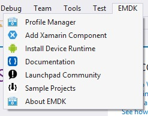
Creating a Profile
Open the "EMDK Profile Manager".
Click "Create".
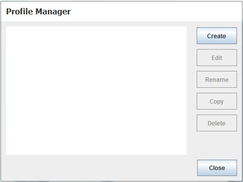
Enter a Profile Name and click "Create". This name is how the profile will be identified by the EMDK.
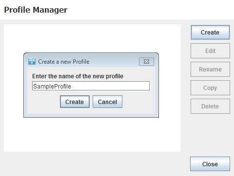
Select the features you would like to enable by selecting the item from the list of "Available Features" and clicking the right arrow button.
Note:
You must enable both a Data Capture Delivery Feature and a Data Capture Input Feature for the profile to send data to your application. For example "Barcode" and "Intent".
You can remove a feature from the "Selected Features" list by clicking the left arrow button.
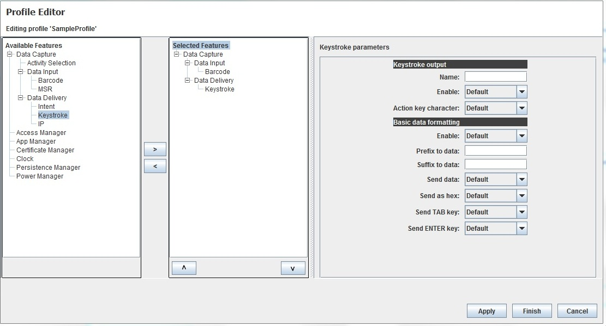
Select a "Selected Features" and the list of parameters will populate on the right hand side of the dialog. When you click on a parameter a description with populate on the lower left hand corner of the dialog.
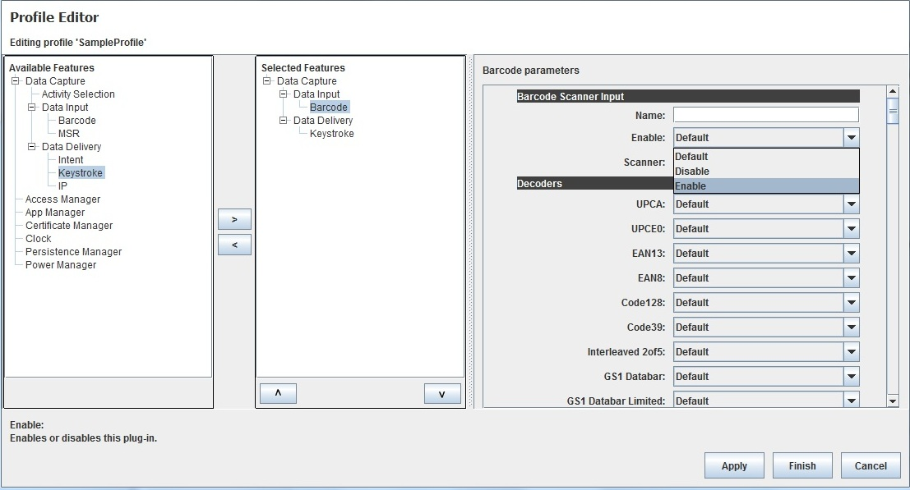
When complete click "Finish".
Click "Close".

Note:
The profile XML will be generated and saved to "EMDKConfig.XML" inside your projects "assets" folder.
Editing a Profile
Open the EMDK Profile Manager.
Select a Profile to modify and click "Edit".
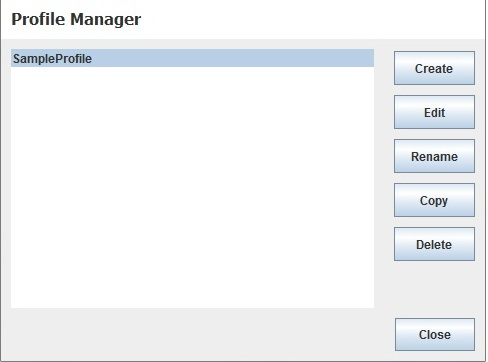
Edit the profile using the Profile Manager in the same way you would when creating a new profile.
When complete click "Finish".
Click "Close".
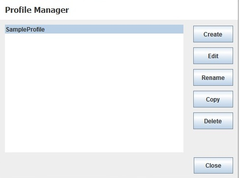
Note:
The profile XML will be updated and saved to "EMDKConfig.XML" inside your projects "assets" folder.
Renaming a Profile
Open the EMDK Profile Manager.
Select a Profile to rename and click "Rename".
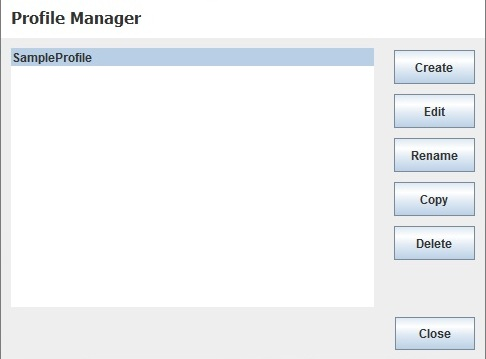
Enter the new name and click "Rename";

Click "Close".
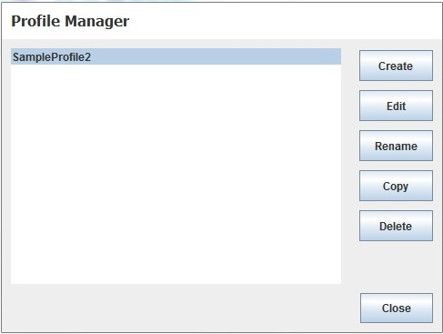
Note:
The profile XML will be updated and saved to "EMDKConfig.XML" inside your projects "assets" folder.
Copying a Profile
Open the EMDK Profile Manager.
Select a Profile to copy and click "Copy".
Enter the a name profile name to uses and click "Copy";
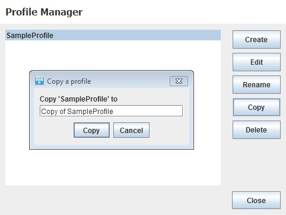
Click "Close".
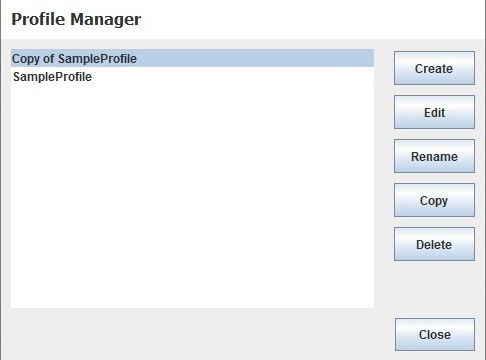
Note:
The profile XML will be updated and saved to "EMDKConfig.XML" inside your projects "assets" folder.
Deleting a Profile
Open the EMDK Profile Manager.
Select a Profile to delete and click "Delete".

Confirm delete by clicking "Delete";
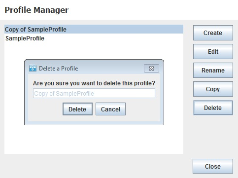
Click "Close".
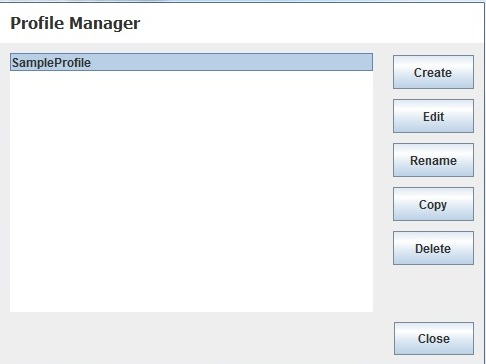
Note:
The profile XML will be updated and saved to "EMDKConfig.XML" inside your projects "assets" folder.
Using the Profile Manager API
Once you create your profiles using the Profile Manager, they will be bundled with your application and available to access using the Profile Manager APIs. These profiles will NOT be applied on the device until it is processed using these APIs.
Multiple Ways to Access
In the ProfileManager API, you will see methods for ProcessProfile and ProcessProfileAsync. Essentially the last parameter, extraData, is one of two types:
- Document - data will be handled as a XML Document.
- String - data will be handled as a raw string.
Creating or Activating a Profile
A profile is created or activated with using the PROFILE_FLAG.SET option. If the profileFlag is set to SET, and if the given profile is not available, it will look for a valid profile in the extraData argument and if present, the profile will be added to the internal XML volatile repository and also applied to the device. If the profile is present, then it will be applied to the device.
// Call processPrfoileAsync with profile name, 'Set' flag and modify data to update the profile
EMDKResults results = profileManager.ProcessProfileAsync(profileName, ProfileManager.PROFILE_FLAG.Set, modifyData);
Usage Notes
Get Started with a Tutorial
Be sure to follow step by step instructions for using the Profile Manager and the associated API's in the Getting Started Tutorial
Multiple Instance of Features
There should only be one instance of the DataCapture feature. The EMDK Profile Manager will not allow you to add multiple DataCapture features, but may happen if you are manually editing the EMDKConfig.xml. Other profile features can have multiple instances and may be required in some cases. For example, you may need two 'Certificate Manager' features. The first one to initialize the certificate store and the second one to install a new certificate.
Order of Features
The profile features will be applied synchronously in the order they appear. For example, you may want to set the clock before you attempt to connect to a Wi-Fi network.
extraData as XML String
The processProfile method has an overload method that allows sending XML content in the extraData parameter as a String.
Method Signature:
// Pass in a string in XML form
ProcessProfileAsync(String profileName, ProfileManager.PROFILE_FLAG profileFlag, String[] extraData)
profileName can be:
[Name of Profile]- to reference the entire profile. ex: 'EMDKProfile1'[profileName]/[featureType]/[feature friendly name in profile parameters]to just edit part of the profile. For example, if my profile is called 'Profile1' and the name I gave to the Clock feature is 'ckEST'. Passing 'profileName' as 'Profile1/Clock/ckEST' will just process this part of the profile.- Valid
[featureType]: ActivitySelection, Barcode, MSR, Intent, Keystroke, IP, Clock, PowerMgr, PersistMgr, CertMgr, AppMgr, AccessMgr, Wi-Fi, GprsMgr
- Valid
XML String Structure
One way you can see how this XML string should be structured is to use the Profile Manager and inspect the XML file that is created:
- Open any project in either Visual Studio or Xamarin Studio that does not have a EMDK profile defined already (so you get just the parameters you want to change).
- Select EMDK / Profile Manager from the menu.
- Add the Profile features you want and selection the options you wish to use.
- Click Finish when you are done with your selections.
- Look in the
assetsfolder and openEMDKConfig.xml - Notice the XML structure that is shown. This complete structure is to be passed in the extraData parameter as a string. You can choose to copy and paste this into your code to be used.
WARNING!: XML parm names and values may not be the same as what is presented in the Profile Manager wizard. Pay close attention to the fields of interest. It is not recommended to manually edit this XML, use the Profile Manager Wizard to ensure proper formation of the XML structure and values.
Profile Name Usage Notes
If the ProfileName node is given in extraData and the ProfileFlag is SET, ProfileName in ExtraData should match with the first parameter passed to processProfile.
Example:
string[] extraData = new string[1];
extraData[0]=
"<?xml version=\"1.0\" encoding=\"utf-8\"?>" +
"<characteristic type=\"Profile\">" +
"<parm name=\"ProfileName\" value=\" EMDKProfile1\"/>" +
"<characteristic type=\"Clock\">" +
"<parm name=\"emdk_name\" value=\"ck1\"/>" +
"<parm name=\"Date\" value=\"2013-05-23\" />" +
"<parm name=\"Time\" value=\"6:59:00\" />" +
"<parm name=\"TimeZone\" value=\"America/Los_Angeles\" />" +
"</characteristic>"+
"</characteristic>";
emdkStatus = mProfileManager.ProcessProfileAsync("EMDKProfile1", ProfileManager.PROFILE_FLAG.SET, extraData);
If the ProfileName node is NOT given in extraData and the ProfileFlag is SET, the content will be merged with the profile given in the first parameter passed to processProfile.
If the ProfileFlag is SET and the profile given in the first parameter passed to processProfile does not exist in EMDKConfig.xml, the profile will be appended to the internal repository.
DataCapture content (Activity Selection, Barcode, MSR, Intent, Keystroke, IP) is considered as a whole and setting any individual feature will set as a whole. In other words, setting "EmdkSampleProfile-1/Keystroke" will push all the DataCapture features to the device.
Feature Name Usage Notes
Each specific profile feature can be named so that only that portion of the profile can be referenced. This can be accomplished by:
- Specifying a name for the specific feature within a profile.
- Using the fully qualified name as the first parameter of the processProfile method.
- If the ProfileFlag is SET, the emdk_name given in ExtraData should match the third part of the profileName passed to the processProfile method (first parameter).
In the following example, we created a profile called EMDKProfile1 and added the Clock feature with a name of ck2. Now we can modify that profile using the processProfile method, making sure we specify the emdk_name parameter as ck2 and use a profileName of EMDKProfile1/Clock/ck2 in the processProfile method:
string[] extraData = new string[1];
extraData[0]=
"<?xml version=\"1.0\" encoding=\"utf-8\"?>" +
"<characteristic type=\"Profile\">" +
"<parm name=\"ProfileName\" value=\" EMDKProfile1\"/>" +
"<characteristic type=\"Clock\">" +
"<parm name=\"emdk_name\" value=\"ck2\"/>" +
"<parm name=\"Date\" value=\"2013-05-23\" />" +
"<parm name=\"Time\" value=\"6:59:00\" />" +
"<parm name=\"TimeZone\" value=\"America/Los_Angeles\" />" +
"</characteristic>"+
"</characteristic>";
emdkStatus = mProfileManager.ProcessProfileAsync("EMDKProfile1/Clock/ck2", ProfileManager.PROFILE_FLAG.SET, extraData);
- If the ProfileFlag is SET, the emdk_name is NOT given in ExtraData and if the first parameter passed to processProfileis has the fully qualified name (ex: EMDKProfile1/Clock/ck2) , content will be appended to the profile (this only applicable for non-DataCapture features).
Example:
string[] extraData = new string[1];
extraData[0]=
"<?xml version=\"1.0\" encoding=\"utf-8\"?>" +
"<characteristic type=\"Profile\">" +
"<parm name=\"ProfileName\" value=\" EMDKProfile1\"/>" +
"<characteristic type=\"Clock\">" +
"<parm name=\"Date\" value=\"2013-05-23\" />" +
"<parm name=\"Time\" value=\"6:59:00\" />" +
"<parm name=\"TimeZone\" value=\"America/Los_Angeles\" />" +
"</characteristic>"+
"</characteristic>";
emdkStatus = mProfileManager.processProfile("EMDKProfile1/Clock", ProfileManager.PROFILE_FLAG.SET, extraData);
PROFILE_FLAG.SET Usage Summary
Here is a summary of the above scenarios when using PROFILE_FLAG.SET and XML in the extraData parameter:
| profileName | EMDKConfig.XML | extraData | Behavior |
|---|---|---|---|
| Profile1 | Contains all features in xml | No | Settings specified in XML will get applied to the device. |
| Profile1/Barcode | Contains all features in xml | No | Settings specified in DataCapture nodes in XML will get applied to the device. |
| Profile1/Barcode/Bar1 | Contains all features in xml | No | Settings specified in DataCapture nodes in XML will get applied to the device given that the emdk_name is set as “Bar1”. |
| Profile1/Clock | Contains all features in xml(Clk1 and Clk2) | No | All the Clock feature nodes are applied to the device. |
| Profile1/Clock/Clk1 | Contains all features in xml(Clk1 and Clk2) | No | Settings defined in the Clk1 node will be applied to the device. |
| Profile1/Clock/Clk2 | Contains all features in xml(Clk1 and Clk2) | No | Settings defined in the Clk2 node will be applied to the device. |
| Profile1 | Contains all features in xml | Settings for Barcode and Clk2 | Settings in XML and in extraData gets applied to the device |
| Profile1/Barcode | Contains all features in xml | Settings for Barcode and Clk2 | FAILURE is returned |
| Profile1/Barcode/Bar1 | Contains all features in xml | Settings for Barcode and Clk1 | FAILURE is returned |
| Profile1/Clock | Contains all features in xml(Clk1 and Clk2) | Settings for Barcode and Clk1 | FAILURE is returned |
| Profile1/Clock | Contains all features in xml(Clk1 and Clk2) | Settings for Barcode and Clk2 | FAILURE is returned |
| Profile1/Clock/Clk1 | Contains all features in xml(Clk1 and Clk2) | Settings for Barcode and Clk1 | FAILURE is returned |